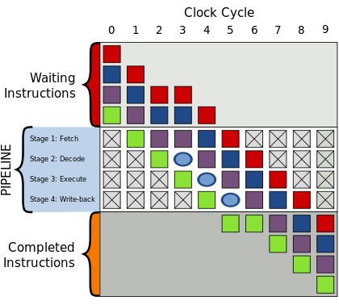
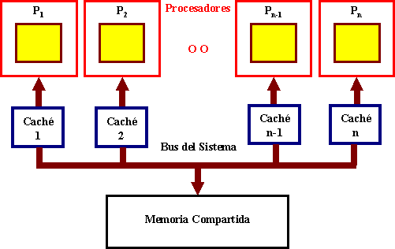

Es el diseño y la organización de un sistema para un equipo de cómputo. Es un modelo y descripción de cada función, así como los requerimientos y las implementaciones de diseño para varias partes del equipo de cómputo.
Clásicas
💻 Von Neumman 💻

La arquitectura von Neumann es una arquitectura de computadora que se caracteriza por tener una CPU que consta de una unidad aritmética y lógica, una unidad de control y una memoria principal. Esta arquitectura utiliza un sistema de direcciones para acceder a la memoria y se basa en la idea de que los datos y las instrucciones se almacenan en la misma memoria. La arquitectura von Neumann ha sido fundamental en la evolución de la informática y ha sido ampliamente utilizada en la construcción de computadoras modernas.
💻 Harvard 💻
La arquitectura Harvard es un modelo de computadora que utiliza dos buses de datos y memoria separados para almacenar y acceder a los datos e instrucciones. La CPU se divide en dos partes, una que accede a la memoria de datos y otra que accede a la memoria de instrucciones. Esta arquitectura se utiliza principalmente en dispositivos embebidos y sistemas de procesamiento de señales digitales, y permite un acceso más rápido a los datos e instrucciones en comparación con la arquitectura von Neumann.
Segmentadas
La arquitectura segmentada es una técnica de diseño de la CPU que se utiliza para mejorar su rendimiento. Se basa en la idea de que cada instrucción de un programa puede descomponerse en varias etapas o segmentos que se pueden procesar de manera independiente y en paralelo. Cada etapa realiza una parte específica del procesamiento, como decodificar la instrucción, buscar operandos, realizar operaciones aritméticas, entre otros.
Cuando se utiliza la arquitectura segmentada, el procesamiento de la CPU se divide en segmentos secuenciales, lo que permite que varios segmentos se ejecuten simultáneamente en diferentes unidades de hardware. Esto reduce el tiempo de ejecución total y mejora el rendimiento de la CPU.
Sin embargo, la implementación de la arquitectura segmentada también puede ser complicada y requiere una mayor coordinación entre los diferentes segmentos. Además, algunas instrucciones pueden no ser fácilmente segmentables y, por lo tanto, no se beneficiarían del uso de esta técnica.
Multiprocesamiento
La arquitectura de multiprocesamiento se refiere al diseño de sistemas informáticos que utilizan múltiples procesadores o núcleos para ejecutar tareas simultáneamente. En un sistema de multiprocesamiento, los procesadores pueden trabajar juntos para realizar una tarea única o pueden trabajar en tareas separadas de forma independiente.
Hay dos tipos principales de arquitectura de multiprocesamiento: simétrica y asíncrona. En un sistema de multiprocesamiento simétrico (SMP), todos los procesadores comparten la misma memoria y se pueden ejecutar tareas de manera independiente. En un sistema de multiprocesamiento asíncrono (AMP), cada procesador tiene su propia memoria y se utiliza para tareas específicas.
La arquitectura de multiprocesamiento se utiliza en una variedad de sistemas informáticos, desde servidores empresariales hasta computadoras personales. Los sistemas de multiprocesamiento pueden mejorar significativamente el rendimiento y la eficiencia de los sistemas informáticos al permitir que varios procesadores trabajen en tareas simultáneamente.

1.2.3 Manejo de E/S
1.2.3.1 Módulos de E/S
1.2.3.2 E/S Programada
1.2.3.3 E/S Mediante Interrupciones
1.2.3.4 Acceso Directo a Memoria
1.2.3.5 Canales y Procesadores de E/S
Unidad Central de Procesamiento
Central Processing Unit
La CPU es la parte central del procesamiento de una computadora. Es la encargada del procesamiento de todas las instrucciones que provienen del hardware y del software.
Unidad Arimética Lógica
Arithmetic-Logic Unit
La arquitectura de la ALU puede variar dependiendo del procesador y la implementación específica, pero en general consta de los siguientes componentes:
Registros:
La ALU tiene un conjunto de registros que almacenan temporalmente los operandos que se van a utilizar en las operaciones aritméticas y lógicas.
Unidad lógica:
La unidad lógica es responsable de realizar operaciones lógicas como AND, OR, NOT, XOR, y desplazamiento de bits.
Unidad aritmética:
La unidad aritmética es responsable de realizar operaciones aritméticas como suma, resta, multiplicación, división y módulo.
Multiplexores:
Los multiplexores son componentes que permiten seleccionar uno de varios valores de entrada para ser utilizados como operandos en las operaciones de la ALU.
Compuertas lógicas:
Las compuertas lógicas son componentes electrónicos que realizan operaciones lógicas básicas como AND, OR y NOT.
Decodificador:
El decodificador es responsable de identificar la operación que se va a realizar y configurar la ALU para que realice la operación correcta.
Unidad de control:
La unidad de control es responsable de controlar la secuencia de operaciones que realiza la ALU y coordinar su funcionamiento con el resto de la CPU.
Registros
En el contexto de la informática y la electrónica, un registro es un componente de almacenamiento de datos en un circuito digital. Esencialmente, un registro es un grupo de flip-flops (circuitos que pueden almacenar un valor binario de 0 o 1) que están conectados en serie.
Es una memoria que esta ubicada en el procesador y se encuentra en el nivel más alto en la jerarquía de memoria, por lo tanto tiene una alta velocidad pero con poca capacidad para almacenar datos que va desde los 4 bits hasta los 64 bits dependiendo del procesador que se utilice. Los datos que almacena son los que se usan frecuentemente
Registros GPR
Registros de propósito general (General Purpose Registers)
AX, AH, AL (Acumulador):
Conserva el resultado temporal después de una operación aritmética o lógica.
BX, BH, BL (Base):
Se utiliza para guardar la dirección base de listas de datos en la memoria.
CX, CH, CL (Contador):
Contiene el conteo para ciertas instrucciones de corrimientos y rotaciones, de iteraciones en el ciclo loop y operaciones repetidas de cadenas.
DX, DH, DL (Datos):
Contiene la parte más significativa de un producto después de una multiplicación; la parte más significativa del dividendo antes de la división.
Registros de Índices y Apuntadores
SP (Apuntador de pila):
Contiene el desplazamiento con respecto al segmento de pila del tope de la pila del programa.
BP (Apuntador de base):
Contiene el desplazamiento con respecto al segmento de pila de datos almacenados en la pila de un programa.
DI (Índice destino):
Contiene el desplazamiento con respecto al segmento extra de un elemento de una cadena o arreglo.
SI (Índice fuente):
Contiene el desplazamiento con respecto al segmento de datos de un elemento de un arreglo o cadena.
IP (Apuntador de instrucciones):
Desplazamiento con respecto al segmento de código de la localidad de memoria que contiene la siguiente instrucción que va a ejecutar el microprocesador.
Registros de Segmentos
CS (Código):
Tiene la dirección lógica del segmento en que se encuentra el código de un programa. Si el código ocupa más de un segmento, contiene la dirección lógica de uno de los segmentos.
DS (Datos):
Tiene la dirección lógica del segmento en que se encuentran los datos estáticos de un programa.
ES (Extra):
Este registro también tiene la dirección lógica de uno de los segmentos en que se encuentran los datos estáticos de un programa.
SS (Pila):
Tiene la dirección lógica del segmento en que se encuentran la pila del sistema. La pila no puede ser mayor a un segmento.
Registros de Control
Se utilizan para controlar las operaciones del procesador, la mayor parte de estos registros no son visibles al usuario y algunos pueden ser accesibles a las instrucciones de maquina ejecutadas en un modo de control.
Registro de direcciones de memoria (MAR)
Contiene la dirección en donde se efectuará la próxima lectura o escritura de datos. El numero de direcciones depende del tamaño de la MAR.
Registro de datos de memoria (MBR)
Contiene los datos que van a ser escritos en la memoria o los que fueron leídos en ella.
Registro de direcciones de entrada y salida (I/O AR)
Especifica al dispositivo ya sea de entrada o salida.
Registro de datos de entrada y salida (I/O BR)
Es una área temporal en donde se lleva a cabo el intercambio de datos entre el procesador y el dispositivo de entrada y salida que esta especificado en IOAR.
Registro de instrucciones (IR)
Contiene la dirección de la siguiente instrucción que se va a ejecutar.
Palabras de estado del programa (PSW)
contiene códigos de condición junto con otras informaciones de estado como el signo, acarro, desbordamiento, entre otras.
Buses
Líneas de datos:
Son las líneas que se utilizan para transferir los datos entre los diferentes componentes de la computadora.
Líneas de control:
Son las líneas que se utilizan para controlar el flujo de datos y las operaciones en la computadora.
Bus de direcciones:
Es el bus que se utiliza para enviar direcciones de memoria y dispositivos a la CPU.
Bus de control:
Es el bus que se utiliza para enviar señales de control a los diferentes componentes de la computadora.
Bus de sistema:
Es el bus que se utiliza para conectar la CPU y la memoria principal. Este bus es uno de los componentes más importantes de una computadora, ya que es el camino por el cual se realizan la mayoría de las operaciones de lectura y escritura.